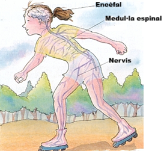

El sistema nerviós I. Estructura del sistema nerviós.
Els centres nerviosos i els nervis
El sistema nerviós controla totes les activitats del nostre cos. La seva forma de funcionar és la següent:
- Capta informacions tant del cos com de l' entorn.
- Elabora les respostes corresponents.
Està format per dos tipus d'òrgans:
- L'encèfal. Es troba al cap, protegit pels ossos del crani. Té forma ovalada. Consta de tres parts: el cervell, el cerebel i el bulb raquidi. - La medul·la espinal. És un llarg cordó que recorre l'interior de la columna vertebral. Està connectada directament a l'encèfal.
|
 |